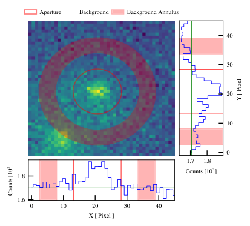

Most of my tooling is Python: modular pipelines, reproducible notebooks, and libraries other people can install and rerun. I use version control, tests where they help, and clear inputs and outputs.
- GitHub: research repositories, scripts, and project-specific tools (open where practical).
- AUTOPHOT: peer-reviewed automated photometry for transients (A&A 667, A62, 2022). Built for survey-style follow-up, uncertainties and interfaces to archival data streams.
- Photometric pipelines and survey interfaces for ZTF and related transient follow-up (forced photometry, template logic, analysis workflows).
- Spectral analysis workflows tied to community standards for classification and physical interpretation (reproducible figures and tables for papers).
What the pipeline looks like

